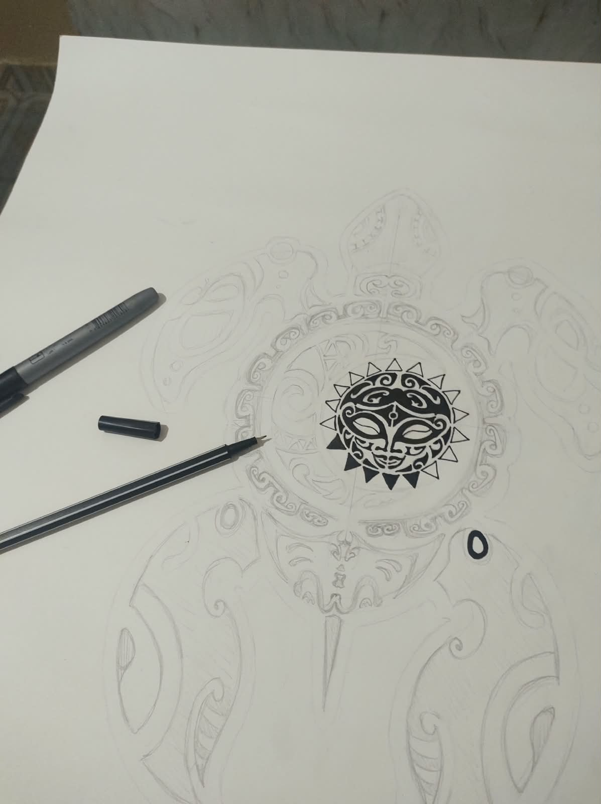

01
Materiais & Confecção
O processo criativo deste trabalho combina a simplicidade de materiais acessíveis com a precisão técnica construída ao longo de anos de experiência com o desenho. Utilizamos uma cartulina resistente como base, estruturando o suporte visual. Para o traço e o acabamento, empregamos canetinhas comuns para os detalhes e canetões de marcar CD, cuja tinta de alta aderência garante linhas firmes, duráveis e de forte contraste sobre o papel.
